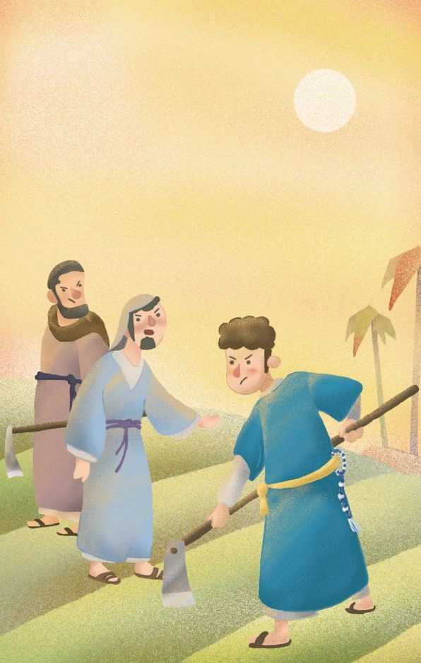

第1章

烈日似火，大地如蒸籠。照理說在這炎熱的天氣裡，不會有人想離開陰涼的樹蔭。然而此時卻有一群人，為了每日的生計，頂著酷烈的陽光，在田裡艱辛的工作。
這裡是猶太支派的伯利恆城郊區，阿撒爾家的田地。
在這裡，若有人指著一塊地問：「這是誰家的田？」當地人一定毫無猶豫，篤定的回答：「當然是阿撒爾大財主家的。」
阿撒爾是這附近唯一的大財主，掌握著黎民百姓賴以生存的糧食。
當地的人對阿撒爾他們家，可謂是痛恨到了極致。尤其是那些在阿撒爾田裡當佃農的工人們，每天必須要在在田裡勞累，才能在每週的最後一天，從工頭手中獲得一小袋的麥子，當作一週辛勤工作的工資。
「嘿！你們不要只動嘴巴，不動手。照你們這速度，等到麥子成熟的季節，地都還沒整好！」吉迪恩與其他工頭們，斜靠在樹下，嘴中叼著根狗尾草，朝著頂著烈日工作的工人們吆喝。
「哼！跩什麼，只是身分比我們好一點，不用下來耕田而已。說到底，還不是阿撒爾家的狗。」以塔納加快手中的動作，口中還不忘著碎碎念。
其他人聽到以塔納的話，跟著一起紛紛道：「誰說不是呢！聽說前幾天，吉迪恩因為不小心弄壞推車，被打了一頓。」
「可不是嗎！據說他在床上躺了三天，現在傷還沒好全，又來這裡耀武揚威。」
「他也就敢在我們面前虎假虎威，要是伊特羅來了，看他還敢不敢繼續坐那！」
阿撒爾．伊特羅，也就是阿撒爾的長子。但對於一個養尊處優的大少爺來說，幾乎不可能在這麼熱的天，大老遠地跑來田地視察。這也是為什麼工頭們敢明目張膽地躲在樹蔭底下偷懶。
以利雅薩默默的在一旁工作，耳裡聽著吉迪恩他們的議論，卻不參與進去。
他記得母親曾對他說過，不要在人背後批評他人的不是。所以每當大家聚在一起論述誰家如何又如何時，以利雅薩都會安靜地離開。如果沒辦法離開現場，就會像現在一樣，靜靜的聽著，不插入話題。
漸漸的，大家只覺得以利雅薩很無趣，不再與他往來。雖然有時候以利雅薩會覺得很失落，但從小順從母親教導的他，並不覺得有任何的不妥。
「以利雅薩，快過來！我好像又不小心把鋤頭插太深，拔不起來了。」離以利雅薩幾步之遙的葉迪爾喊道。
葉迪爾的呼喊聲，瞬間將以利雅薩飄遠的思緒扯回。
以利雅薩搖搖頭，趕緊跑過去幫忙，從臉上甩下的幾滴汗珠，在落入土壤的瞬間，蒸發入燥熱的空氣中。他拿過葉迪爾手中的鋤頭，用力翻起一大把土，同時嘴裡不閒著：「跟你說過好幾次，慢慢來別著急，多翻幾次，土一樣能鬆起來。」
葉迪爾拿起掛在脖子上的毛巾，擦著汗喘氣道：「我這不是想快點把今天的工作完成，之後便可以休息了嗎。」
以利雅薩將手中的鋤頭遞還給葉迪爾：「你這樣到最後只會更累，聽我的，一次翻一點土就好。我都在這工作好幾年了，這點經驗還是可靠的。」
葉迪爾明白以利雅薩說的是對的，但還是嘟著嘴不情願的點頭：「知道啦！」
以利雅薩被葉迪爾的樣子可愛到，抬手拍拍對方的頭：「別不開心啦！等等我完成我的工作，再過來幫你，別著急啊～」
葉迪爾是以利雅薩的鄰居，因為比以利雅薩還要小好幾歲，一直被當作弟弟般照顧。照理說，依著葉迪爾的年紀，來田裡工作還稍嫌早，但因為前幾個月他的父親艾維的腿腳受了傷，家中又沒有其他的成年男子可以出來工作，一直坐吃山空也不是辦法，無奈之下，只好讓個頭才堪堪高於鋤頭的葉迪爾出來工作。萬幸的是，以利雅薩也在這邊工作，艾維便託付以利雅薩，讓他多幫襯著葉迪爾。
當人專注在一件事物上時，時間便會在不知不覺中飛速流逝。轉眼間，已臨近黃昏，橘紅色的夕陽，照映出半邊天的霞光。
今天正好是發工資的日子，一群工人們，拿著小布袋，在工頭面前一一排好，等著工頭們拿勺子將小麥舀自己的布袋裡。
「哦～是那個沒爹的來了。吉迪恩，他們家沒男人，不用給那麼多米，替你家主人省著點吧！」以塔納幾人在一旁，看到換以利雅薩拿袋子去領麥子，故意起鬨道。
吉迪恩抬頭看了眼走到自己前面的以利雅薩，依舊是一副從容不迫的神情，心中有些惱怒。每個人看到自己，不是卑躬屈膝的百般討好，就是為了多拿點小麥而逢迎巴結。只有以利雅薩，永遠的不卑不亢，態度上挑不出一丁點兒的毛病，但就是從頭到腳都讓人看不順眼。
吉迪恩在心中冷哼一聲，熟練的在舀麥子的過程中，故意的抖動一下，讓勺子中的麥子撒出一大半，落在地上：「啊！不好意思，今天工作太累了，我的手有點抖。」
以利雅薩擺擺手：「沒事，您工作一整天也辛苦了。」
葉迪爾在一旁看不下去，這不是他們第一次欺負以利雅薩，但每次以利雅薩都不會還手。今天也不知道是哪來的勇氣，他突然想站出來一回：「我都注意你一整天了，你就坐在樹蔭底下，連姿勢都懶的換，怎麼可能會累！」
已經好久沒有人敢在吉迪恩面前這麼說話，吉迪恩一時只覺得有趣，便想逗逗他。於是他彎腰對葉迪爾道：「是、是，您說的對，是我的錯。」
葉迪爾見吉迪恩這麼快就服軟，心中有些訝異，但畢竟還在人手底下工作，不好再多說什麼，便將手中的布袋舉到吉迪恩面前，示意下一個輪到自己。
吉迪恩笑道：「我這次一定注意，放心好了。」
嘴上是這麼說的，但當勺子盛滿小麥後，吉迪恩卻在半空中傾倒勺子，同時鬆手，讓勺子連同小麥一起散落在地上，並用很浮誇的語氣道：「啊！雖然但是，我還是覺得很累欸，竟然連小小的一勺米都拿不穩。」
「你、你明明就是故意的！」葉迪爾眼裡射出火般凌厲的目光，顫抖著手彎腰撿起勺子，直接想要從桶子裡為自己舀小麥。
吉迪恩見狀，一把奪過葉迪爾手中的勺子，罵道：「你自己都說注意我一整天，明顯就是在偷懶沒認真工作，我扣你工錢，有任何問題嗎！」
有一點葉迪爾沒說錯，那就是吉迪恩在樹蔭底下休息了一整天，現在的確一點也不累，反而很有精神。這就導致吉迪恩只是輕輕一推，就將葉迪爾往後推了好幾步。
「你！」葉迪爾站穩身子，氣的一時說不出話來。
還是以利雅薩見苗頭不對，趕緊拉住葉迪爾，在他耳邊囑咐道：「沒事，我麥子分你一半就行了，反正家裡還有之前餘留下來的，別跟他吵。」
說完，對著吉迪恩道歉：「真的很抱歉，葉迪爾還小，不懂事，您大人有大量，別跟他一般見識了。」
「切，年紀小就好好待在家玩泥巴，別裝大人出來丟人現眼。去去去，一邊待著，別擋著後面的人，還一堆人等著領工錢呢！」吉迪恩不耐煩的揮手趕人。
「以利雅薩，我……」葉迪爾紅著雙眼，跟在以利雅薩身後。
以利雅薩嘆了口氣，攬著葉迪爾的肩膀，轉移話題：「前幾個月我又去了趟示羅，想聽聽發生了什麼事嗎？」
「嗯嗯，這次又有發生什麼有趣的事？」
望著眼前似乎看不見盡頭的回家之路，以利雅薩陷入回憶……